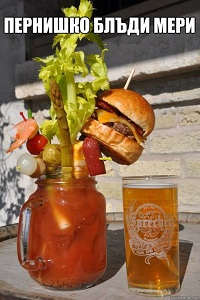
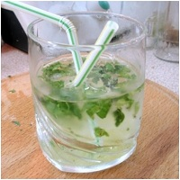
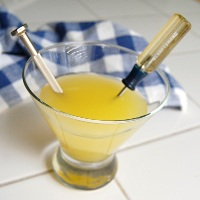
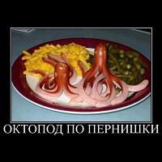
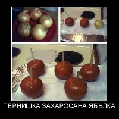
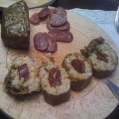
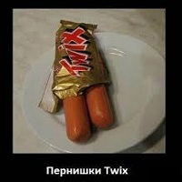
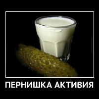
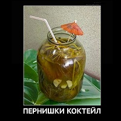

Целта на курса Cocktail Fundamentals е да положи основни знания по микс технологии. При изучаването се обръща внимание на различните видове съставки:
Основен алкохол:
Скоч
Уиски (смесено и ирландско)
Бърбън
Бренди
Джин
Ром (тъмен и светъл)
Текила
Водка
Вермут (сух и сладък)
Червено и бяло вино(сухо)
Газирано вино
Бира
Плодови ликьори
Разредители:
Минерална вода
Сода
Кола
Спрайт или 7-Up
Тоник
Лимонов сок
Сок от портокал
Сок от грйпфрут
Сок от ананас
Сок от банан
Сок от ябълка
Доматен сок
Сок от касис
Сок от праскова и кайсия
Сок от манго или маракуя
Подправки:
Ангустура(битер)
Гренадин(сироп от нар)
Мараскино(сироп от вишни)
Оргеат(сироп от бадеми)
Сироп от пешън фрут
Захарен сироп
Сос Табаско
Сос Уорчестършир
Канела
Захар
Мляко
Сметана
Прибори и аксесоари:
Шейкър
Смесителна чаша(500мл)
Блендер
Барова цедка(Стрейн)
Отварачка и тирбушон
Ножчета за плодове и спирали
Дъска за рязане
Мерки(25,40,50,80,100 и 200 мл)
Сокоизстисквачка
Ренде за индийско орехче и кори
Лъжица за сладолед
Щипка за лед
Ледотрошачка
Кофичка за лед
Формички за лед
Коктейлни чадърчета
Клечки(пики)
Пластмасови бъркалки
Сламки
Плодове за украса
Лимон
Лайм
Портокал
Банан
Ананас
Ягоди
Пъпеш
Краставица
Листа прясна мента
Коктейлни череши
Коктейлни маслини
Коктейлни лукчета
Курсът завършва с практически изпит по Cocktail Fundamentals, който изисква решаване на 3-4 коктейла за 1-2 часа, присъствено, на маса.
Бонус точки се дават за оригинални или традиционни местни специалитети и мезета.
Примерни коктейли:
Блъди-Мери (Bloody Mary): Аптекарски спирт, разреден с домашна салца. Препоръчва се да се гаси с бира.

Bloody Mary Pernik Style
Мохито (Mojito): Голяма ракия с малко настъргана марулка и лед.

Mojito Pernik Style
Отвертка (Screwdriver): Ракия или водка, разредена с портокалов сок и, разбира се, отвертка, с която да го разбъркаш, иначе защо да се казва така?

Screwdriver Pernik Style
Космополитан (Cosmopolitan): Водка и компот от боровинки. Ако нямате компот от боровинки, става всякакъв друг компот, важното е да сме космополитни.
Секс на плажа (Sex on the Beach): Това не е коктейл, а мястото, на което го правиш след дискотеката в Приморско.
Миньор* (Miner): Жълто-черния коктейл съдържа алкохолен концентрат без значение от спирта, разреден с лимонада и кола.
Кукер* (Kuker): Домашно вино разредено със спирт. Дезинфекцира и гони всички болести(като кукер по Сурва).
Винкел* (Vinkell): 100 градусов чист спирт. Не се разрежда, пие се без мезе на гладно. Правиш се винкел и всичко ти е равно.
*Забележка: Миньор, Кукер и Винкел, освен фази в препиването подредени в нарастване на промилите, са и три уникални за Пернишкия регион коктейли, които всеки уважаващ себе си гастрольор трябва да опита.
Мезета:
рецепта: неизвестна*

Octopus Pernik Style
рецепта: неизвестна*

Caramel Apple Pernik Style
рецепта: неизвестна*

Sushi Pernik Style
рецепта: неизвестна*

Twix - Made in Pernik
... и нещо за следващата сутрин:
за дамите*

Activia - Made in Pernik
и за господата*

Cocktail Trezve Pernik Style
*Забележка: Рецептите на означените със звезда(*) деликатеси са неизвестни. Снимките са единственото, което е открито от техните автори. Последните са обявени за безследно изчезнали. Пердполага се, че изчезването им е свързано с тайната около приготвянето на деликатесите.